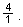
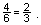
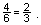
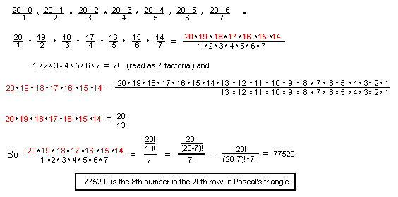
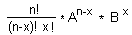

Ian's discovery to get any number in Pascal's
Triangle
Chapter 9: The Binomial Expansion and Infinite Series
We'll look at the coefficients found in the expansion of (A+B)n above:

For about 35 years my students and I looked at these numbers and found
many patterns. For example if you add two numbers in a row, like 4+6, you
get the number below the 6 in the in the next row, 10. Looking down
column #2, 1,3 6 10 ... They go up 2, then 3 (to get 6), then 4 (to get
10), and so on. So you can predict the number below 10 in the next row.
And you can find a rule for each column. What we'd like to do is to be
able to find the 8th number in the 20th row, though. What Ian did was
something
special, and enabled one to do this. Ian did this at age 12. Newton did a
similar thing when he was
19, according to W.W. Sawyer in "Integrated Mathematics Scheme- Book C".
I just happened to receive this book from England about a week after Ian
did his thing. In Ian's words:
"I was faced with the problem of generating Pascal's triangle. I decided
to start looking at patterns until I found one that applied to the
entire triangle. After some trial and error, I noticed a pattern in the
ratios from one column to the next. In row 4, for example, the ratios
are arrived at by asking,
what times 1 = 4? What times 4 = 6?
 Then
 And
Then
 And


To get the 8th number in the 20th row:

Ian switched from the 'number in the row' to 'the column number'. Since
the columns start with the 0th column, his x is one less than the number
in the row, for example, the 3rd number is in column #2. In other words
just subtract 1 first, from the number in the row and use that as
x.
Notice that

And the general term, the number in
the xth column, in the nth row, of the
binomial expansion is

We go on to show how this
is used to find (1 - x)-1 and later in
chapter 10 to
find the square root of 2, and later still in ch. 11 to find compound
interest and e.
Back to
Ch. 9 beginnings
To order Don's
materials
To choose sample problems from
other chapters
Mathman Home